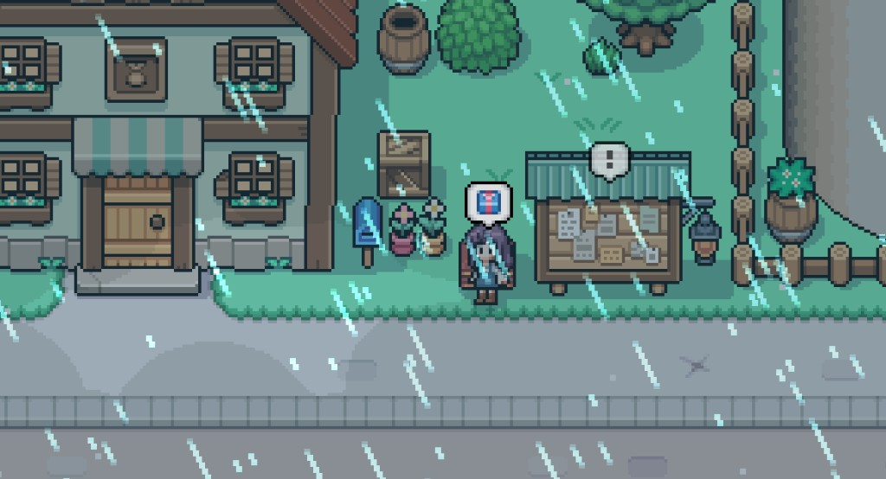
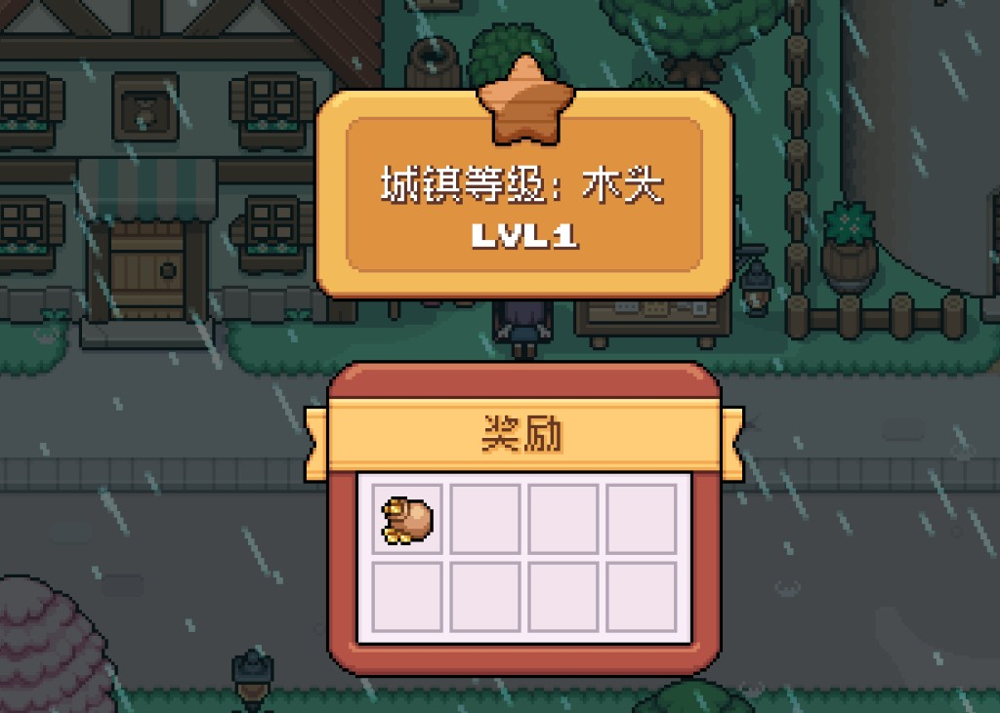
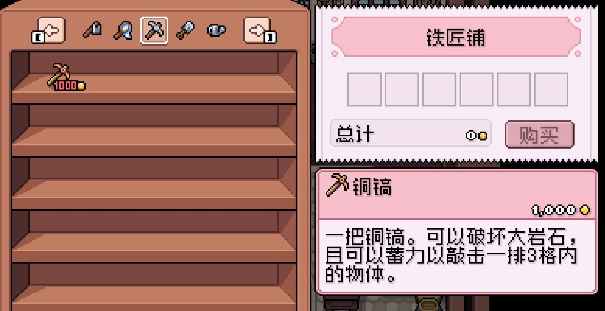
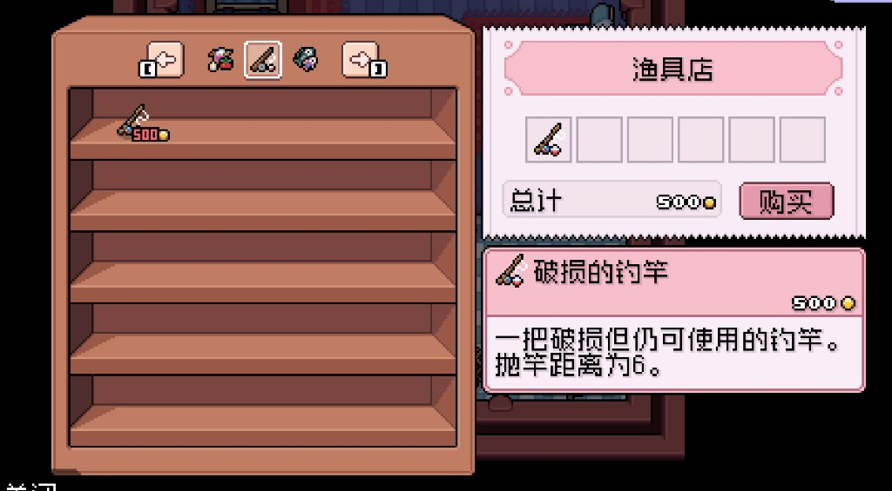

Quick answers
- Ship steady crops and obvious forage before chasing rare sales.
- Spend on a waterable seed patch and the tool that saves daily energy.
- One shop trip beats three panic walks for a single item.
- Furniture, perfect gifts, and “optimal” every day can wait.
- Prices change with patches—use priorities, not memorized gold tables.
From our save (money bruises): We once sold almost every edible forage for pocket change, then stood empty at low energy with nothing to eat. Another week we nearly dumped the seed buffer on a Saturday-market curiosity—walking away kept Summer planting possible. Request-board and town-rank purses paid better than panic shopping when we actually claimed the chest beside the board.
How early money actually appears
In the first weeks, cash usually comes from three boring sources:
- Crops you can water every morning — small patch, shipped when ready
- Forage on the way — pick what you pass; don’t clear the whole map
- Quest / town rewards — take them when they sit on your route
Fishing and deep mines can wait until you have a rod, tools, and energy leftover after watering.
What to buy first
- Seeds for a patch you can finish — if you cannot water it daily, buy fewer.
- The painful tool — upgrade or replace whatever drains mornings (often watering or clearing).
- Bag space helpers — chest near the house so you stop hauling junk.
The general store (southeast town, near the mill) is enough for most early buys. Check mail before a long walk so you do not miss a free reward sitting at home.
Money FOMO to ignore
- Buying every seed type “just in case”
- Emptying the shop on cosmetics or furniture
- Gift-shopping before crops are stable
- Restarting the day because one sale felt suboptimal
- Comparing your tesserae to a wiki max-efficiency run
A calm money day
- Mail → water → harvest
- Put ship-ready extras in the shipping crate
- One outing: short forage or one shop stop
- Keep a little cash buffer for tomorrow’s seeds
- Sleep on time
Screenshots from our save






FAQ
Should I sell everything?
Keep a few snacks for energy and materials you know you need this week. Ship the rest of the obvious extras.
Is the museum required for early money?
No. Donate when you already have spare finds. Do not empty your mornings for it yet.
When do I start fishing for cash?
After you own a rod and watering feels easy. Until then, crops + forage + shipping are enough.
Unofficial fan guide. Not affiliated with NPC Studio. Verify details in your game version.